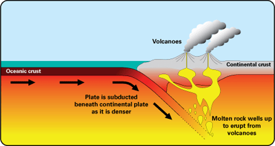
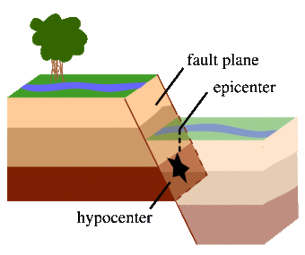

Volcanoes
Volcanoes are an exciting natural phenomenon that occurs at both divergent and convergent plate boundaries. They form when two plates collide, causing one plate to subduct below the other, resulting in magma uplift and ultimately a volcano! They also form when two tectonic plates drift away from each other, causing volcanic activity. The third way volcanoes can form is through hot spots, which form when a rising plume of magma burns through a tectonic plate. One example of this is the Hawaiian Islands. There are three main types of volcanoes: shield volcanoes, cinder cones, and stratovolcanoes, also known as composite volcanoes. Shield volcanoes have gently sloping sides, and their eruptions are more viscous than others. Cinder cones have very steep sides and are the typical image of a volcano. They are also the most common type! Stratovolcanoes tend to resemble a mountain, often with snow-covered peaks, and are extremely large.
Earthquakes
An earthquake is when two blocks of earth suddenly slip past one another. This area is referred to as the fault. An earthquake originates at a hypocenter, and directly above that is referred to as the epicenter. Sometimes we feel small earthquakes referred to as foreshocks, which are often followed by much larger earthquakes. These larger earthquakes are referred to as mainshocks. Earthquakes are measured by seismographs that read the waves traveling through the Earth. There are P waves that compress and stretch the Earth's crust in a parallel direction. Then there are S waves, which cause the earth's crust to move back and forth perpendicular to the surface.
Weather and Climate
Climate and weather are often confused together. Weather refers to our day-to-day atmospheric conditions, whereas climate is the average of these conditions over hundreds of years. Over the years, scientists have observed that our Earth is warming dramatically, and humans have significantly contributed to this change. We have seen an increase in extreme weather, disappearing sea ice, fires, drought, record highs, record lows, and ecosystems failing. All of these are not only taking a toll on ecosystems but also on humans. The climate is slowly warming has caused impacts on us that we may not know about. If you take a look at your local weather, you will see much more extremes or increased severe weather.
If you want to test your knowledge follow this link to take a quick quiz! Climate Quiz